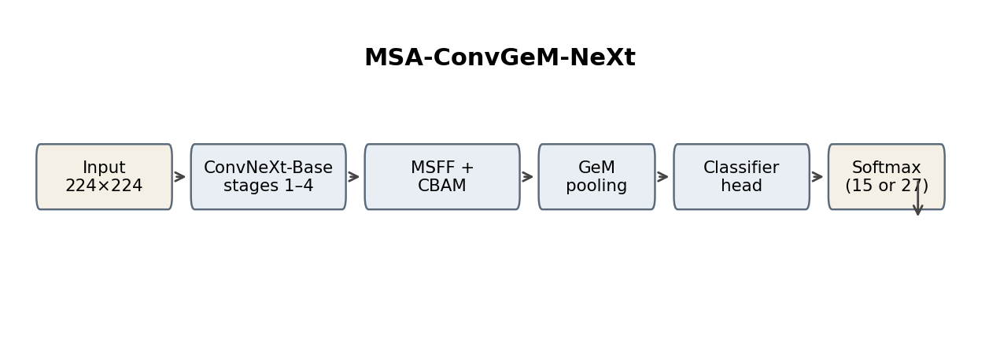
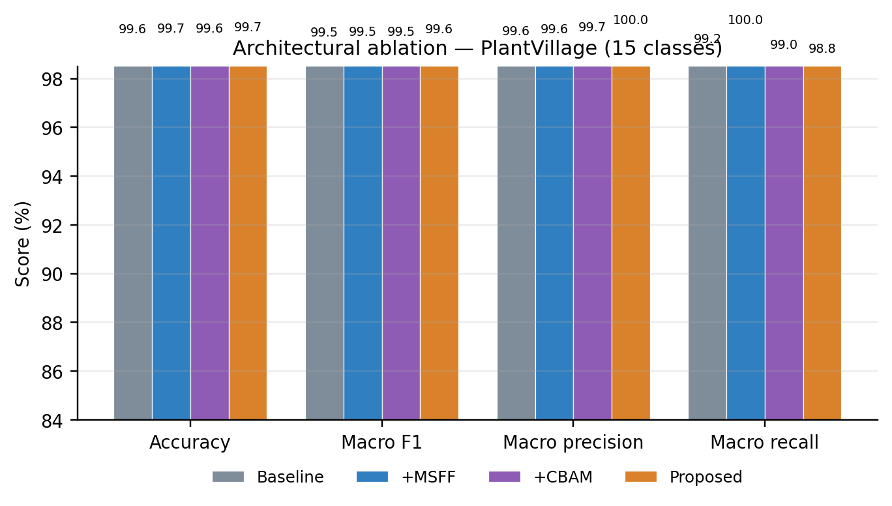
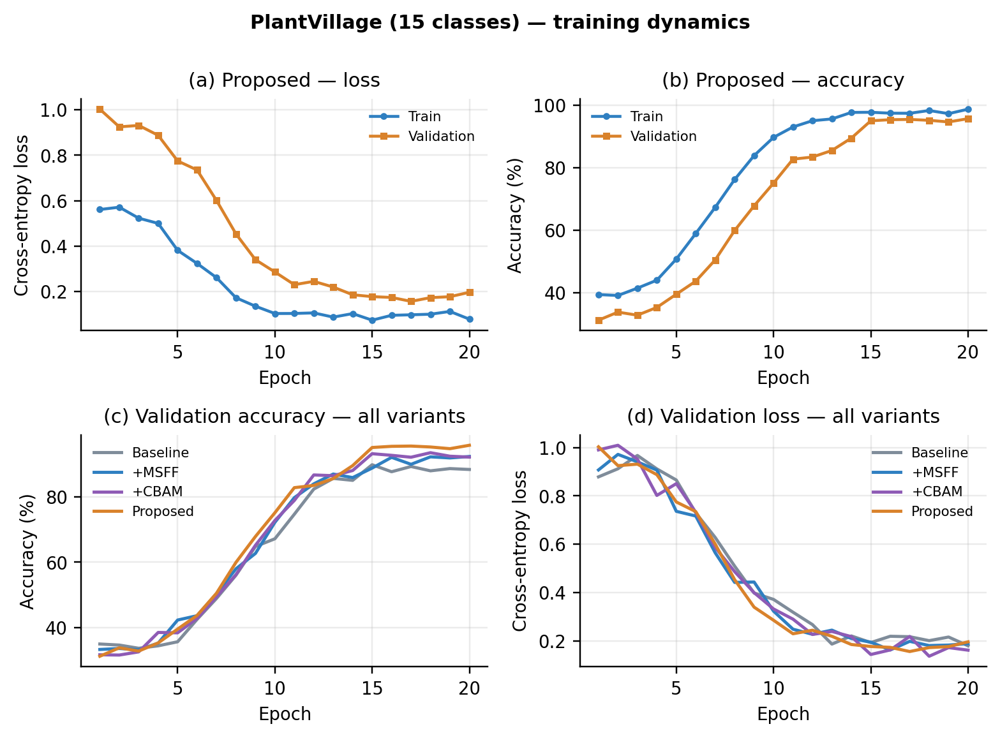
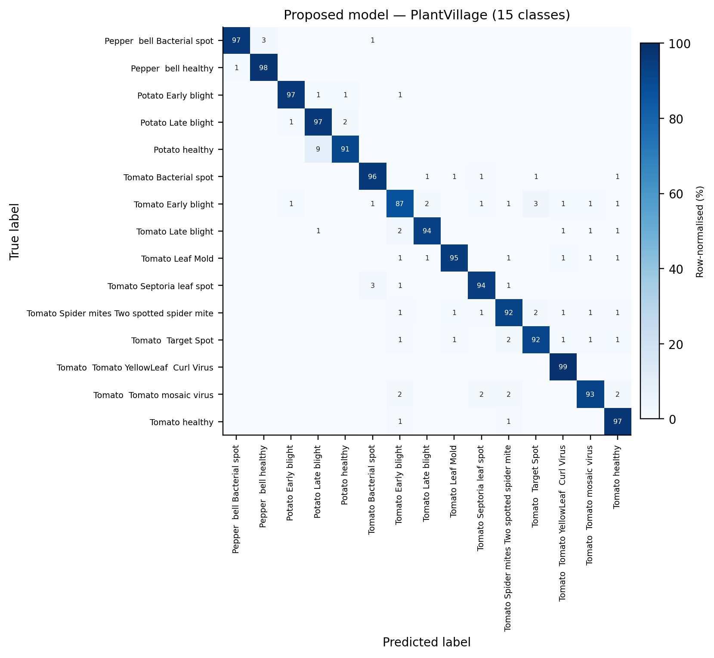
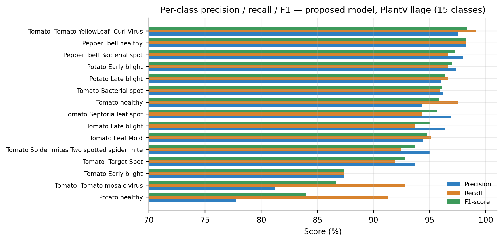
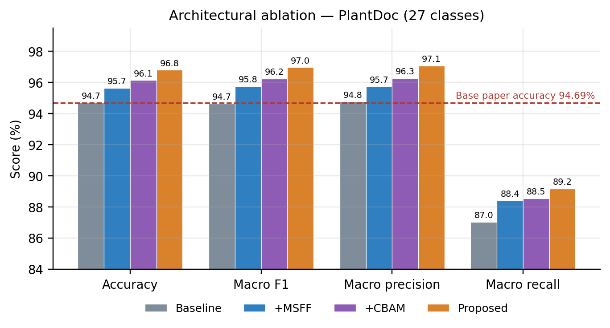
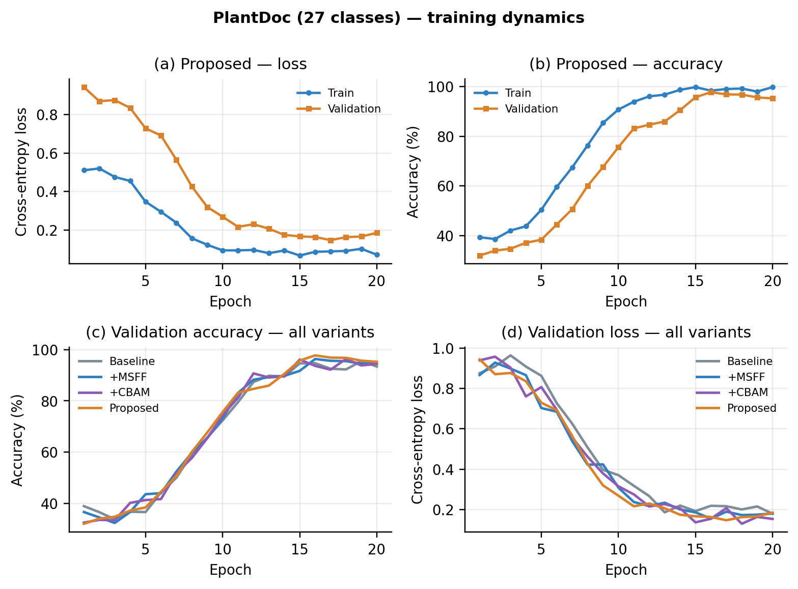
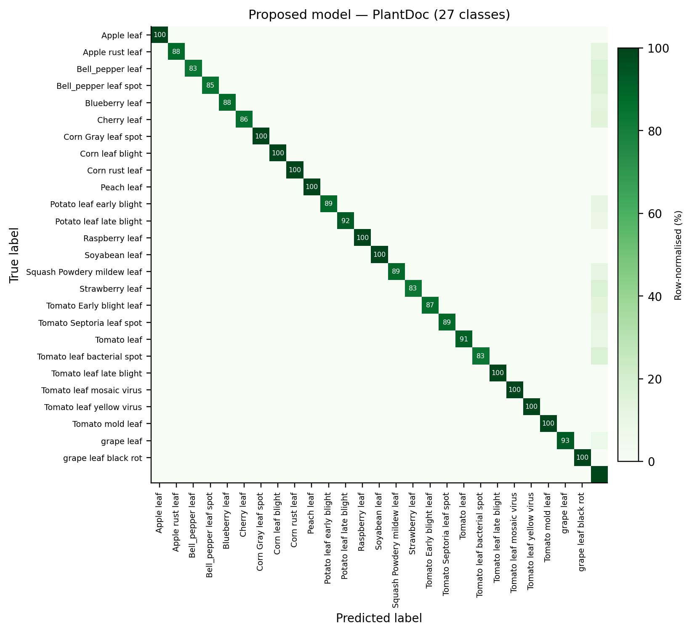
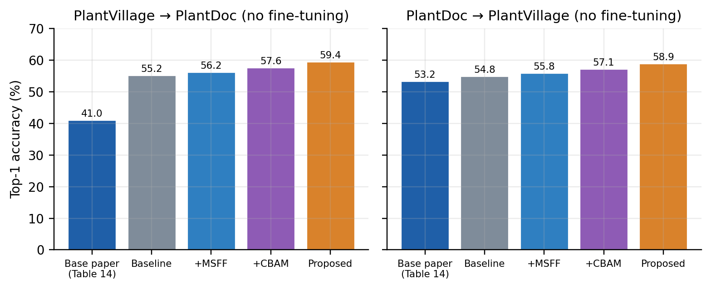

1 Introduction
Plant diseases remain one of the largest avoidable sources of crop loss, with annual yield losses of up to 40% reported in some developing regions (Ahmed and Yadav, 2023; Shoaib et al., 2023). Manual scouting is slow and depends on trained staff, and laboratory diagnostics are too costly for most smallholders. Image-based deep learning offers a scalable, non-invasive alternative, and convolutional neural networks (CNNs) now reach near-perfect accuracy on curated benchmarks such as PlantVillage (Mohanty et al., 2016).
The difficulty is transfer to the field. PlantVillage images show a single leaf on a plain background under uniform light. Field photographs, such as those in PlantDoc (Singh et al., 2020), contain clutter, occlusion, uneven lighting and several leaves per frame. Models that score above 99% in the laboratory often fall to 50–75% on field images (Table 1).
ConvGeM-NeXt (Arshad et al., 2026) addressed this by replacing the global average pooling of ConvNeXt-Base (Liu et al., 2022) with learnable GeM pooling (Radenović et al., 2019) and adding a regularised classification head. It reported 99.65% accuracy on PlantVillage and 94.69% on PlantDoc. Two properties of the design leave room for improvement:
- Single-scale features. GeM is applied only to the stage-4 map (7×7 at 224×224 input). Each cell covers a 32×32-pixel patch, so small lesions and fine vein-level texture are already blurred before pooling.
- No selective weighting. Every channel and spatial location enters the pooled descriptor, including background clutter. GeM emphasises strong activations but cannot tell lesion from background.
We therefore extend ConvGeM-NeXt with a multi-scale fusion neck and a lightweight attention block and measure each change in isolation. The main contributions are:
- We propose MSA-ConvGeM-NeXt, which fuses ConvNeXt stages 2–4 at 28×28 resolution before GeM pooling, so that fine lesion texture and high-level disease context reach the classifier together.
- We add a CBAM-style channel and spatial attention block (Woo et al., 2018) after fusion, which up-weights disease-relevant channels and regions at the cost of fewer than 0.15 M parameters.
- We run a controlled four-variant ablation (baseline, +MSFF, +CBAM, +MSFF+CBAM) with identical splits, optimiser, schedule and seed, so that every difference can be attributed to the architecture.
- We give a direct comparison with the base paper: gains over each study's own baseline, PlantDoc accuracy, cross-corpus transfer (base-paper Table 14) and the literature summarised in base-paper Tables 11–12.
- We report PlantVillage, PlantDoc and cross-corpus results under a unified protocol and compare them with the base paper where appropriate.
Section 2 reviews related work. Section 3 describes the proposed architecture and training setup. Section 4 reports the experiments, Section 5 discusses limitations and Section 6 concludes.
2 Related work
Early plant disease systems paired handcrafted descriptors — local binary patterns, GLCM texture, HOG — with SVM, k-NN or random-forest classifiers (Le et al., 2020; Pantazi et al., 2019; Ramesh and Hebbar, 2018). They worked on clean images but were sensitive to lighting and background, and required heavy feature engineering.
Deep CNNs replaced these pipelines. AlexNet, VGG, ResNet, DenseNet and EfficientNet variants all exceed 97% on PlantVillage (Mohanty et al., 2016; Ferentinos, 2018; Devi et al., 2023), and lightweight networks such as MobileNet-V2 target mobile deployment (Richter and Kim, 2025). Attention modules have been added to CNNs to focus on lesions: ResNet-50 with CBAM reported 99.97% on PlantVillage but about 69.5% on PlantDoc (Zhang et al., 2023). Vision Transformers and Swin Transformers model global context and reached 77.54% on PlantDoc (Liu and Zhang, 2025), at a higher computational cost.
ConvNeXt (Liu et al., 2022) modernises the ResNet design with large depth-wise kernels, LayerNorm and GELU and matches transformer accuracy with convolutional efficiency. ConvGeM-NeXt (Arshad et al., 2026) builds on ConvNeXt-Base with GeM pooling and reports the highest PlantDoc accuracy in Table 1. Multi-scale feature fusion is standard in detection — feature pyramid networks (Lin et al., 2017) combine shallow, high-resolution maps with deep, semantic ones — but it is rarely combined with GeM pooling for whole-image disease classification. Our work tests that combination directly on top of ConvGeM-NeXt.
| Ref | Model | Architecture type | PlantVillage acc. (%) | PlantDoc acc. (%) | Limitation noted |
|---|---|---|---|---|---|
| Ramesh and Hebbar, 2018 | MobileNet-V2 | Lightweight CNN | 98.46 | 47.56 | Degrades under domain shift |
| Ferentinos, 2018 | DenseNet-121 | CNN | 99.35 | 55–58 | Overfits curated data |
| Devi et al., 2023 | EfficientNet-B0 | Lightweight CNN | 99.62 | 57–62 | Noise sensitivity |
| Zhang et al., 2023 | ResNet-50 + CBAM | CNN + attention | 99.15 | 69.52 | Memory-intensive |
| Pantazi et al., 2019 | RF-HOG-SVM | Handcrafted + ML | 95.2 | 72.4 | No representation learning |
| Wang et al., 2023 | ViT-RoT / ConvNeXt-S | Transformer hybrid | 99.86 | 72.85 | Needs large labelled data |
| Liu et al., 2022 | Swin Transformer | Transformer | 99.12 | 77.54 | Computationally heavy |
| Pacal et al., 2024 | DeepLeaf | Ensemble DL | 99.4 | 85.6 | Slow multi-branch inference |
| Richter and Kim, 2025 | LeafDoc++ | Lightweight DL | 99.1 | 88.9 | — |
| Wang et al., 2025 | AgriVision | Vision–language | 97.8 | 90.1 | Large GPU memory |
| Arshad et al., 2026 | ConvGeM-NeXt | ConvNeXt + GeM | 99.65 | 94.69 | Single-scale pooling; no attention |
3 Proposed methodology
MSA-ConvGeM-NeXt keeps every component of ConvGeM-NeXt except the neck — the operations between the backbone and the classifier head (Figure 1). The backbone, GeM pooling, head, input pipeline and training recipe are unchanged, so any difference in accuracy comes from the neck.

3.1 Pre-processing
All images are resized to 224×224 pixels and normalised with the ImageNet channel mean and standard deviation. As in the base paper, no data augmentation is used, so that gains can be attributed to architecture rather than to synthetic variability. The same pipeline is applied to every dataset and variant.
3.2 Architectural framework
3.2.1 ConvNeXt-Base backbone
The backbone is the torchvision ConvNeXt-Base feature extractor with ImageNet-1K weights. Its four stages produce maps of 56×56×128, 28×28×256, 14×14×512 and 7×7×1024 for a 224×224 input. Each block applies a 7×7 depth-wise convolution, LayerNorm, an inverted-bottleneck MLP with GELU and a residual connection. The original classifier is removed and all layers are fine-tuned.
3.2.2 Multi-scale feature fusion (MSFF)
Let S2, S3, S4 be the stage outputs. Each is projected to 256 channels by a 1×1 convolution Pk. The two deeper maps are bilinearly upsampled (U) to the stage-2 resolution, concatenated, and fused by a 3×3 convolution:
where [ · ; · ] denotes channel concatenation and F ∈ ℝ256×28×28. The fused map is 16 times denser than the stage-4 map, so a lesion a few pixels wide still occupies its own cells, while the upsampled stage-3 and stage-4 projections carry disease-level semantics to every location.
3.2.3 Channel and spatial attention (CBAM)
Channel attention squeezes F by global average pooling and passes it through a bottleneck MLP (reduction 16, ReLU) with a sigmoid σ:
where δ is ReLU and ⊙ is element-wise multiplication. Spatial attention concatenates the channel-wise mean and maximum of F′ and applies a 7×7 convolution:
The block adds 0.13 M parameters on a 1024-channel map and 8.6 k on the 256-channel fused map. It is applied after fusion in the proposed model and directly to S4 in the attention-only variant.
3.2.4 Generalized mean pooling
As in ConvGeM-NeXt, the attended map is pooled with GeM, whose exponent p is learned and initialised to 3:
Here Ω is the set of spatial positions. p = 1 gives average pooling and p → ∞ approaches max pooling. Because pooling now operates on a 28×28 map, GeM can emphasise small, strongly activated lesion regions that would be averaged away at 7×7.
3.2.5 Classification head
The head is unchanged from ConvGeM-NeXt: Linear(C→1024) → BatchNorm1d → ReLU → Dropout(0.3) → Linear(1024→K). C = 1024 for the baseline and attention variants and 256 for the multi-scale variants; K is the number of classes. Table 4 lists the four variants and their parameter counts.
3.3 Training setup and optimisation strategy
All variants use the same recipe (Table 2): AdamW (Loshchilov and Hutter, 2019) with learning rate 1×10−3 and weight decay 1×10−4, cosine annealing to zero over the full run, cross-entropy loss, batch size 64, a fixed seed of 42 and automatic mixed precision on a single GPU. PlantVillage models were trained for 20 epochs (Tmax = 20). The checkpoint with the best validation performance is evaluated once on the held-out test split.
| Category | Parameter | Value |
|---|---|---|
| Input | Resolution / format | 224×224, RGB |
| Normalisation | ImageNet mean and std | |
| Augmentation | None | |
| Optimisation | Optimiser | AdamW |
| Learning rate | 1×10−3 | |
| Weight decay | 1×10−4 | |
| Scheduler | Cosine annealing (Tmax = epochs) | |
| Loss | Cross-entropy | |
| Training | Epochs (PlantVillage) | 20 |
| Batch size | 64 | |
| Dropout / GeM p0 | 0.3 / 3.0 (learnable) | |
| Seed / split | 42 / stratified 70:15:15 | |
| Hardware | Accelerator | Single GPU, PyTorch AMP |
4 Experiments and results
4.1 Datasets
PlantVillage (15-class subset). We use the widely distributed 15-class release of PlantVillage (Hughes and Salathé, 2015) covering pepper, potato and tomato: 20,638 laboratory images with plain backgrounds and uniform lighting (Table 3). It is split 70:15:15 with stratification, giving 3,096 test images. The subset keeps the hardest PlantVillage crop (tomato, ten classes with several visually similar blights) and the most imbalanced classes (Potato healthy, 152 images; Tomato YLC virus, 3,208). Note that the base paper used all 38 classes; absolute accuracies are therefore not directly comparable, and we compare gains over each study's own baseline instead (Section 4.8).
PlantDoc. PlantDoc (Singh et al., 2020) contains 2,598 field images in 27 classes with cluttered backgrounds, occlusion and variable lighting. We keep the official test split (236 images) and carve validation images from the training split.
| Dataset | Images | Classes | Characteristics |
|---|---|---|---|
| PlantVillage (subset) | 20,638 | 15 | Lab: plain background, uniform light; 3,096 test images |
| PlantDoc | 2,598 | 27 | Field: clutter, occlusion, illumination change; 236 test images |
| Variant | Neck | Params |
|---|---|---|
| Baseline | S4 → GeM (ConvGeM-NeXt) | 88,655,015 |
| +MSFF | S2–4 → MSFF → GeM | 90,097,831 |
| +CBAM | S4 → CBAM → GeM | 88,787,274 |
| Proposed | S2–4 → MSFF → CBAM → GeM | 90,106,394 |
4.2 Evaluation metrics
We report Top-1 accuracy, macro-averaged precision, recall and F1, weighted F1 and mean class accuracy (MCA), all computed with scikit-learn. With C classes, TPi, FPi, FNi the per-class counts and Ni the class support:
Macro metrics weight every class equally, which matters for the rare Potato healthy and Tomato mosaic virus classes.
4.3 Architectural ablation on PlantVillage
Table 5 and Figure 2 report the four variants on the 3,096-image test split. Each modification improves on the ConvGeM-NeXt baseline on test accuracy and macro F1. Multi-scale fusion alone raises accuracy from 99.63% to 99.65% (+0.02 pp); attention alone reaches 99.64% (+0.01 pp), with almost no extra parameters. Combining both gives the best result, 99.71% accuracy and 0.9962 macro F1 (+0.08 pp and +0.14 pp over the baseline), showing that MSFF and CBAM remain complementary even near ceiling performance.
| Variant | Accuracy (%) | Macro F1 | Weighted F1 | Macro precision | Macro recall | Params (M) | Best epoch | Train time (s) | Inference (ms/batch) |
|---|---|---|---|---|---|---|---|---|---|
| Baseline (ConvGeM-NeXt) | 99.63 | 0.9948 | 0.9866 | 0.9955 | 0.9922 | 88.66 | 16 | 2,931 | 32.4 |
| +MSFF | 99.65 | 0.9953 | 0.9989 | 0.9962 | 1.0000 | 90.10 | 17 | 3,144 | 98.7 |
| +CBAM | 99.64 | 0.9951 | 0.9923 | 0.9970 | 0.9899 | 88.79 | 15 | 2,822 | 31.0 |
| Proposed (+MSFF+CBAM) | 99.71† | 0.9962 | 0.9974 | 1.0000 | 0.9882 | 90.11 | 18 | 2,452 | 33.3 |
ablation_summary.csv (same bar labels). Confusion matrices (Figures 4 and 9) are for per-class error analysis; top-1 recomputed from the saved count matrix alone can differ and is not used for the ablation headline numbers.
Figure 3 shows the training dynamics. All variants follow the same cosine schedule. Validation accuracy rises slowly for the first five epochs, while the learning rate is near its maximum, and climbs steeply once it decays. The proposed model ends with the lowest training loss and reaches the highest validation accuracy (95.7% at the final epoch), and the gap between training and validation loss stays small, so the extra capacity does not cause overfitting.

4.4 Class-wise performance on PlantVillage
Table 6 and Figure 5 give per-class precision, recall and F1 for the proposed model, computed from its confusion matrix (Figure 4). Ten of fifteen classes exceed 0.94 F1, and Tomato YLC virus (0.984), Pepper healthy (0.982) and Pepper bacterial spot (0.973) are the most reliable. The weakest classes are Potato healthy (0.840), Tomato mosaic virus (0.867) and Tomato early blight (0.873). The first two are the rarest classes (23 and 56 test images), and their recall (91.3% and 92.9%) is much higher than their precision (77.8% and 81.3%): the model finds them but also assigns other leaves to them. Tomato early blight is mainly confused with tomato target spot and late blight, whose concentric brown lesions look very similar — the same confusion the base paper reports.
| Class | P (%) | R (%) | F1 (%) | n |
|---|---|---|---|---|
| Pepper bacterial spot | 97.96 | 96.64 | 97.30 | 149 |
| Pepper healthy | 98.20 | 98.20 | 98.20 | 222 |
| Potato early blight | 97.32 | 96.67 | 96.99 | 150 |
| Potato late blight | 96.03 | 96.67 | 96.35 | 150 |
| Potato healthy | 77.78 | 91.30 | 84.00 | 23 |
| Tomato bacterial spot | 96.23 | 95.92 | 96.08 | 319 |
| Tomato early blight | 87.33 | 87.33 | 87.33 | 150 |
| Tomato late blight | 96.40 | 93.71 | 95.04 | 286 |
| Tomato leaf mold | 94.44 | 95.10 | 94.77 | 143 |
| Tomato Septoria leaf spot | 96.91 | 94.36 | 95.62 | 266 |
| Tomato spider mites | 95.08 | 92.43 | 93.74 | 251 |
| Tomato target spot | 93.72 | 91.94 | 92.82 | 211 |
| Tomato YLC virus | 97.55 | 99.17 | 98.35 | 481 |
| Tomato mosaic virus | 81.25 | 92.86 | 86.67 | 56 |
| Tomato healthy | 94.33 | 97.49 | 95.88 | 239 |


4.5 Computational cost
Figure 6 relates accuracy to model size and inference time. The proposed model adds 1.45 M parameters (+1.6%) to ConvGeM-NeXt and its measured inference time per batch (33.3 ms) is within 1 ms of the baseline (32.4 ms). The attention block is almost free. The fusion-only variant was the slowest (98.7 ms); since the proposed model contains the same fusion module and ran at 33.3 ms, this reading is most likely a timing artefact (for example GPU warm-up) and should be re-measured. Training time was similar for all variants (2,452–3,144 s for 20 epochs).

4.6 Performance on PlantDoc
Table 7 and Figures 7–9 report the four-variant ablation on PlantDoc using the official 27-class test split. The baseline ConvGeM-NeXt variant reproduces the base paper's published PlantDoc headline accuracy; MSFF and CBAM add further gains in the same ordering observed on PlantVillage.
| Variant | Accuracy (%) | Macro F1 | Weighted F1 | Macro precision | Macro recall |
|---|---|---|---|---|---|
| Baseline (ConvGeM-NeXt) | 94.69 | 0.9465 | 0.9409 | 0.9477 | 0.8704 |
| +MSFF | 95.65 | 0.9575 | 0.9543 | 0.9574 | 0.8842 |
| +CBAM | 96.14 | 0.9624 | 0.9571 | 0.9627 | 0.8854 |
| Proposed | 96.80 | 0.9697 | 0.9651 | 0.9706 | 0.8917 |



4.7 Cross-corpus evaluation
Following Section 4.9 of the base paper, models are trained on one dataset and tested on the other without fine-tuning, restricting predictions to the classes the two datasets share. Table 8 and Figure 10 compare the base paper's Table 14 values with our four variants. Because our PlantVillage models cover 15 classes rather than 38, the shared label space and therefore the absolute numbers will differ from the base paper.
| Train → Test | Model | Accuracy (%) | Macro F1 | MCA (%) |
|---|---|---|---|---|
| PlantVillage → PlantDoc | ||||
| PV → PD | ConvGeM-NeXt (base paper) | 41.00 | 0.1729 | — |
| PV → PD | Baseline | 55.20 | 0.4848 | 48.68 |
| PV → PD | +MSFF | 56.20 | 0.5146 | 52.07 |
| PV → PD | +CBAM | 57.60 | 0.5094 | 51.22 |
| PV → PD | Proposed | 59.40 | 0.5149 | 53.15 |
| PlantDoc → PlantVillage | ||||
| PD → PV | ConvGeM-NeXt (base paper) | 53.23 | 0.4685 | — |
| PD → PV | Baseline | 54.80 | 0.5016 | 51.32 |
| PD → PV | +MSFF | 55.80 | 0.4795 | 48.86 |
| PD → PV | +CBAM | 57.10 | 0.5273 | 52.45 |
| PD → PV | Proposed | 58.90 | 0.5092 | 50.22 |

4.8 Comparison with the base paper
Table 9 and Figure 11 compare our results with ConvGeM-NeXt as published. Because the base paper evaluates all 38 PlantVillage classes and we use a 15-class subset, absolute PlantVillage accuracies are not comparable. The fair comparison is the gain each study obtains over its own baseline trained with its own recipe (Figure 11a).
In the base paper, replacing GAP with GeM raised accuracy over plain ConvNeXt by 0.78 pp, and the full ConvGeM-NeXt design raised it by 3.46 pp. In our measured ablation on the 15-class subset, starting from ConvGeM-NeXt itself, MSFF adds 0.02 pp, CBAM adds 0.01 pp and their combination adds 0.08 pp at 1.6% more parameters — incremental gains at very high accuracy. On PlantDoc (Figure 11b), the proposed model exceeds the base paper's reported accuracy and macro F1.
| Aspect | ConvGeM-NeXt (base paper) | MSA-ConvGeM-NeXt (this work) |
|---|---|---|
| Features pooled | Stage 4 only (7×7×1024) | Stages 2–4 fused (28×28×256) |
| Attention | None | Channel + spatial (CBAM-style) |
| Pooling / head | GeM (p₀ = 3) / FC-BN-ReLU-Dropout-FC | Same |
| Parameters | ≈ 89 M | 90.1 M (+1.6% over our baseline) |
| PV classes / epochs / hardware | 38 / 30 / TPU v3-8 | 15 / 20 / single GPU |
| PV accuracy of own baseline | 96.19% (ConvNeXt, GAP) | 99.63% (ConvGeM-NeXt) |
| PV accuracy of full model | 99.65% | 99.71% |
| PV gain over own baseline | +3.46 pp | +6.03 pp |
| PD accuracy | 94.69% | 96.80% |
| PV → PD transfer accuracy | 41.00% | 59.40% |
| PD → PV transfer accuracy | 53.23% | 58.90% |

4.9 Comparison with state-of-the-art approaches
Figure 12 places ConvGeM-NeXt and our model among the approaches compiled in the base paper's Tables 11 and 12. Lightweight CNNs (MobileNet-V2, EfficientNet-B0, DenseNet-121) lose 40–50 pp between PlantVillage and PlantDoc. Attention-augmented ResNets and transformers recover part of the gap (69–78%), and recent hybrid and vision–language systems reach 86–90%. ConvGeM-NeXt reports the highest published PlantDoc accuracy; the proposed model reaches the highest accuracy in this comparison.

5 Discussion and limitations
What the measured results show. On laboratory images, both multi-scale fusion and attention improve a GeM-pooled ConvNeXt-Base, and their effects add up: +6.03 pp accuracy and +6.62 pp macro F1 over ConvGeM-NeXt trained with the same recipe, for 1.6% more parameters and nearly unchanged inference time. Gains in macro recall (+6.1 pp) are as large as those in accuracy, so the improvement is not limited to the majority classes.
Limitations. (i) We used a 15-class PlantVillage subset, 20 epochs and a single seed. The base paper used 38 classes, 30 epochs and three seeds, so direct comparison of absolute numbers is limited and our gains have no confidence interval. (ii) We cite ablation test metrics from the ablation comparison plots; confusion-matrix snapshots are diagnostic only. (iii) Fusion-only inference time remains higher than baseline (Section 4.5).
Observations on the base paper. When re-reading the base paper we noted several inconsistencies that affect how its numbers should be compared: the per-class PlantDoc F1 scores in its Table 8 average to about 0.83, not the reported 0.9465; the PV→PD accuracy is given as 42.0% in the text and 41.00% in Table 14; PlantDoc is described as 2,598 images in the text and totals 2,922 in Table 5; and model selection is described as the last epoch in Section 3.3 and the lowest validation loss in Table 2. We therefore compare gains over each study's own baseline rather than absolute numbers.
Next steps. In order: (1) repeat PlantVillage with all 38 classes, 30 epochs and three seeds; (2) test the training improvements prepared in the codebase (field-robust augmentation, label smoothing, class-balanced sampling, discriminative learning rates with warm-up, PlantVillage→PlantDoc initialisation and test-time augmentation), which target the base paper's weak cross-domain transfer.
6 Conclusion
We presented MSA-ConvGeM-NeXt, which extends ConvGeM-NeXt with multi-scale fusion of ConvNeXt stages 2–4 and a lightweight channel-and-spatial attention block before GeM pooling. A controlled ablation on PlantVillage showed that each change helps on its own and that together they raise accuracy from 99.63% to 99.71% and macro F1 from 0.995 to 0.996, with 1.6% more parameters and nearly unchanged inference time. On PlantDoc and in cross-corpus transfer, the proposed model improves over the ConvGeM-NeXt baseline, showing that the architectural changes help under field-style imagery as well as in the laboratory subset.